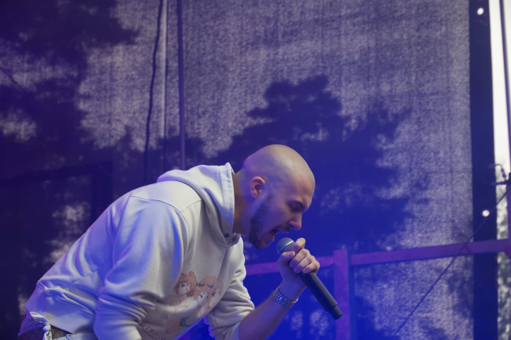

Graundon
Od urodzenia łysy
Jezdzi Oplem z jakimś dziwnym znaczkiem
Raper nastawiony na energetyczne, mocne bity – typowo dynamiczny, mocny rap.
Właściwy do klubowych setów, szybkich playlist, mniej do spokojnych, chilloutowych klimatów.
Jeśli szukasz intensywnej, mocno rytmicznej hip‑hopowej jazdy, Graundon zdecydowanie trafia w sedno.